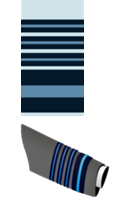
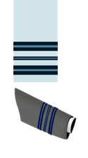

Stories of Valour & Patriotism
The Indian Air Force (IAF) is the air arm of the Indian Armed Forces. Its complement of personnel and aircraft assets ranks fourth amongst the air forces of the world. Its primary mission is to secure Indian airspace and to conduct aerial warfare during armed conflict. It was officially established on 8 October 1932 as an auxiliary air force of the British Empire which honoured India's aviation service during World War II with the prefix Royal. After India gained independence from the United Kingdom in 1947, the name Royal Indian Air Force was kept and served in the name of Dominion of India. With the government's transition to a Republic in 1950, the prefix Royal was removed.
The IAF bears the responsibility of safeguarding Indian airspace and thus furthering national interests in conjunction with the other branches of the armed forces. The IAF provides close air support to the Indian Army troops on the battlefield as well as strategic and tactical airlift capabilities. The Indian Air Force, with highly trained crews, pilots, and access to modern military assets provides India with the capacity to provide rapid response evacuation, search-and-rescue (SAR) operations, and delivery of relief supplies to affected areas via cargo aircraft. The IAF provided extensive assistance to relief operations during natural calamities such as the Gujarat cyclone in 1998, the tsunami in 2004, and North India floods in 2013.
It was founded on 8 October 1932; 87 years ago. Its colours are Navy blue, sky blue and white. They march on the tune: Quick - Desh pukare jab sab ko (When the nation calls)& Slow - Vayu Sena Nishaan (The Air Force Emblem). The Indian Air Force celebrates Air Force Day on 8 October every year. The current Chief of the Air Staff (CAS) Air Chief Marshal Rakesh Kumar Singh Bhadauria (PVSM, AVSM, VM, ADC), Vice Chief of the Air Staff (VCAS) is Air Marshal Harjit Singh Arora (AVSM, ADC). Notable commanders: Marshal of the Indian Air Force Arjan Singh, Air Chief Marshal Pratap Chandra Lal, Air Marshal Subroto Mukherjee
Official Website: indianairforce.nic.in
During World War II, the IAF played an instrumental role in halting the advance of the Japanese army in Burma, where the first IAF air strike was executed. When India became a republic in 1950, the prefix 'Royal' was dropped from the Indian Air Force. At the same time, the current IAF roundel was adopted. During the Sino-Indian War, India's military planners failed to deploy and effectively use the IAF against the invading Chinese forces.
This resulted in India losing a significant amount of advantage to the Chinese; especially in Jammu and Kashmir. After the 1965 war, the IAF underwent a series of changes to improve its capabilities.
On 11 May 1999, the Indian Air Force was called in to provide close air support to the Indian Army at the height of the ongoing Kargil conflict with the use of helicopters. The IAF strike was code named Operation Safed Sagar. The first strikes were launched on 26 May, when the Indian Air Force struck infiltrator positions with fighter aircraft and helicopter gunships. The initial strikes saw MiG-27s carrying out offensive sorties, with MiG-21s and later MiG-29s providing fighter cover. The IAF also deployed its radars and the MiG-29 fighters in vast numbers to keep check on Pakistani military movements across the border. Srinagar Airport was at this time closed to civilian air-traffic and dedicated to the Indian Air Force.
On 27 February 2019, in retaliation for the IAF bombing of an alleged terrorist hideout in Balakot, a group of PAF F-16 and JF-17 fighters allegedly conducted an airstrike against certain ground targets across the Line of Control. They were intercepted by a group of IAF fighters consisting of Su-30MKI and MiG-21 jets. An ensuing dogfight began. According to India, one PAF F-16 was shot down by an IAF MIG-21 piloted by Abhinandan Varthaman, while Pakistan denied use of F-16s in the operation.
The Indian Air Force Motto: Nabhah sprsam diptam (Glory that touches the sky)
| OFFICER RANKS | ||
|---|---|---|
| Rank | Shoulder/Sleeve Insignia | |
| Marshal of the Indian Air Force (Honorary/Wartime Rank) |
||
| Air Chief Marshal (Held only by the Chief of the Air Staff) |
 | |
| Air Marshal | ||
| Air Vice Marshal |  |
|
| Air Commodore | ||
| Group Captain | ||
| Wing Commander | ||
| Squadron Leader |  | |
| Flight Lieutenant | ||
| Flying Officer | ||
| OTHER RANKS | ||
| Rank | Shoulder/Sleeve Insignia | |
| Master Warrant Officer | ||
| Warrant Officer | ||
| Junior Warrant Officer |  |
|
| Sergeant | ARM: | |
| Corporal | ARM: | |
| Leading Aircraftsman | ARM: | |
| Aircraftsman | ARM: | |